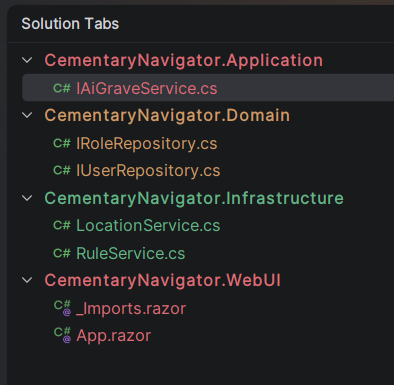
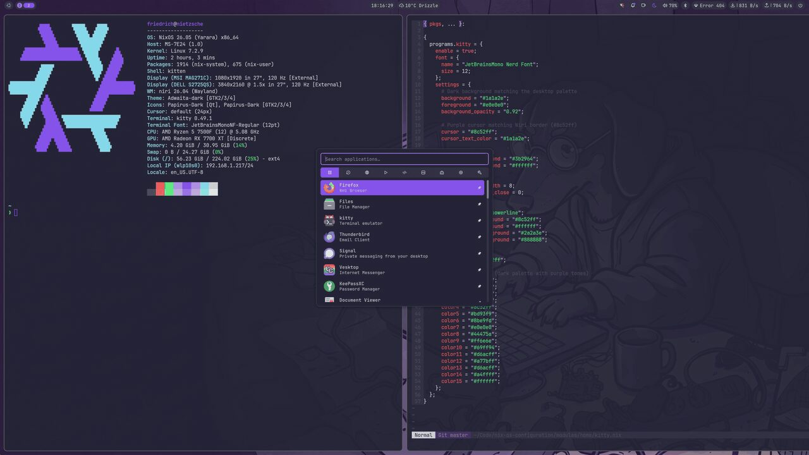
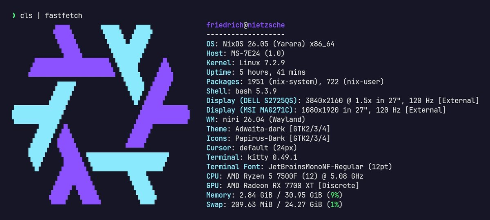

- Work
- C#
- .NET
- gRPC
- PostgreSQL
- Docker
gRPC API in .NET
gRPC service for communication between microservices, handling over 1 million requests per day.
friedrich@nietzsche:~$ whoami
.NET software engineer at i4B in Koszalin, building ASP.NET Core APIs and gRPC microservices on the newest .NET, plus APIs in Python and Go.
01About
I started with .NET as a trainee at GlobalLogic in 2022 and joined i4B as an intern in 2023, where I now work as a software developer. Most of my work is backend architecture in C#, always on the newest .NET: I have written it since .NET 6.
Besides .NET I write Python, with Django and FastAPI for APIs, and Go, with Gin for web APIs and Bubble Tea for terminal apps. I am currently learning Blazor to build front ends without leaving the .NET stack. Outside work I collect vinyl records and mechanical watches, play retro games (mostly Nintendo) and make pixel art.
02Experience
Backend services in C# and .NET on SQL databases. I am responsible for backend architecture, integrations with other systems and ongoing maintenance.
Backend development and SQL database work in C# and .NET.
Backend projects in C# and .NET, using Git, SQL and Jira day to day.
03Projects
gRPC service for communication between microservices, handling over 1 million requests per day.
Pipeline that processes large datasets with AWS Glue jobs, with Lambda functions automating the transform and load steps.

Open-files navigator for JetBrains IDEs. It docks on the left, groups files by IDE module or .NET project and can replace the editor tab bar.
View on GitHubBlog application with user accounts, rich text editing and comments.
.NET Web API for managing a book store's authors, backed by PostgreSQL and run in Docker.
View on GitHub.NET MAUI app that connects to an Arduino thermometer and shows its readings.
View on GitHub
My NixOS systems and dotfiles: one flake builds the desktop and the laptop, themed with the palette this site uses.
View on GitHub04Stack
Everything I work with, from the tests down to the operating system. Scroll on and each layer lights up.
Tests at every level, and enough telemetry to know what production is doing.
xUnit · NUnit · Moq · NSubstitute · WebApplicationFactory · Testcontainers · architecture tests · BenchmarkDotNet · profiling · TDD · Serilog · OpenTelemetry · health checks · Polly
Structure that keeps a codebase easy to change as it grows.
Clean Architecture · DDD · CQRS / MediatR · SOLID · design patterns
Microservices that talk to each other over gRPC and message queues.
gRPC · MassTransit · message queues · event-driven integration · microservices
HTTP APIs and real-time endpoints, with authentication and authorization built in.
Web API · MVC · minimal APIs · SignalR · ASP.NET Core Identity · JWT · OAuth 2.0 / OpenID Connect · Blazor (learning)
C# on the newest .NET day to day, as I have since .NET 6. Python and Go alongside, and TypeScript when a job needs it.
C# · .NET 6+ · LINQ · async/await · dependency injection · background services · Python (Django, FastAPI) · Go (Gin, Bubble Tea) · TypeScript / Node.js
Relational databases first: schema design and query optimisation on SQL Server and PostgreSQL, with Redis alongside.
SQL Server · T-SQL · PostgreSQL · Redis · Entity Framework Core · Dapper
Where the code runs: containers, cloud services and the pipelines that ship them.
AWS (EC2, S3, Lambda, RDS, DynamoDB, Glue) · Azure · Docker · Terraform · CI/CD · Git · Linux
05Setup
I run NixOS on two machines, nietzsche (desktop) and dostoyevsky (laptop), both built from one flake: the niri Wayland compositor with the Noctalia shell, kitty, LazyVim and the rest of my tools.
Modules are flake-parts files imported automatically, dotfiles are linked into place without Home Manager, and pinned inputs mean the same config always builds the same system. One colour palette themes the terminal, GTK, Qt, Neovim and this site.
friedrich@nietzsche:~$ fastfetch

06Contact
friedrich@nietzsche:~$ cat contact.txt